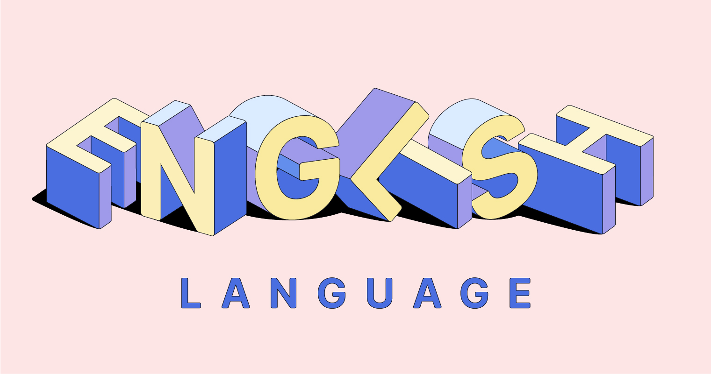

- History
- Grammar
- Else
Grammar
This web is for those who want to study English basics
all classes will be free

Origins and basic characteristics
English belongs to the Indo-European family of languages and is therefore related to most other languages spoken in Europe and western Asia from Iceland to India. The parent tongue, called Proto-Indo-European, was spoken about 5,000 years ago by nomads believed to have roamed the southeast European plains. Germanic, one of the language groups descended from this ancestral speech, is usually divided by scholars into three regional groups: East (Burgundian, Vandal, and Gothic, all extinct), North (Icelandic, Faroese, Norwegian, Swedish, and Danish), and West (German, Dutch [and Flemish], Frisian, and English). Though closely related to English, German remains far more conservative than English in its retention of a fairly elaborate system of inflections. Frisian, spoken by the inhabitants of the Dutch province of Friesland and the islands off the west coast of Schleswig, is the language most nearly related to Modern English. Icelandic, which has changed little over the last thousand years, is the living language most nearly resembling Old English in grammatical structure.